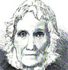

Alison Booth
Holloway, Laura Carter [Langford]. The Mothers of Great Men and Women, and Some Wives of Great Men. Illustrated. New York: Funk & Wagnalls, 1883. Philadelphia: Calypso, 1883; 1887. Baltimore: Wharton, 1883; Woodward, 1889; 1891; 1892.
TOC: Mary Washington; Mother of Mendelsohn; Mother of Napoleon; Monica, Mother of St. Augustine; Abraham Lincoln's Mother; Charles Dicken's Mother; Mother of Wesley; Charles Lamb's Mother; Thackeray's Mother; Cornelia, Mother of the Gracchi; Lord Byron's Mother; Mother of Rev. John Newton; Mother of Martin Luther; Mother of Stonewall Jackson; Mother of Cowper; Mother of Goethe; Mother of the Napiers; Jean Paul Richter's Mother; Madame Necker, the Mother of Madame de Staël; Mother and wife of Shakspeare; Mother of Beethoven; Mother of Sheridan; Frances Trollope; Lady Beaconsfield; Mother of Garfield; Mother of Alexander von Humboldt; Wife of Lord William Russell; Mother of Lamartine; Milton's Wives; Mother of Carlyle; Johnson's Mother and Wife; Mothers of Antiquity; Marie Antoinette as Wife and Mother; Mother of Burns; Short sketches of some wives and mothers; Abigail Adams.
See also Pop Chart-
Mary, the Mother of Jesus
-
Leah Mendelssohn Bartholdy
-
 The Mother of Napoleon
The Mother of Napoleon -
 The Mother of St. Augustine
The Mother of St. Augustine -
Sally Bush
-
 Susannah Wesley
Susannah Wesley -
Cornelia
-
Luther at Home
-
 Goethe's Mother
Goethe's Mother -
Goethe's Mother Telling Stories
-
 Suzanne Necker
Suzanne Necker -
 Marie Antoinette
Marie Antoinette -
 The Mother of President Garfield
The Mother of President Garfield -
 Lady Rachel Russell
Lady Rachel Russell -
The Mother of Lamartine
-
Marie Antoinette
-
The Mother of John Q. Adams
Search OCLC WorldCat for this title.
Search Google Books for this title.